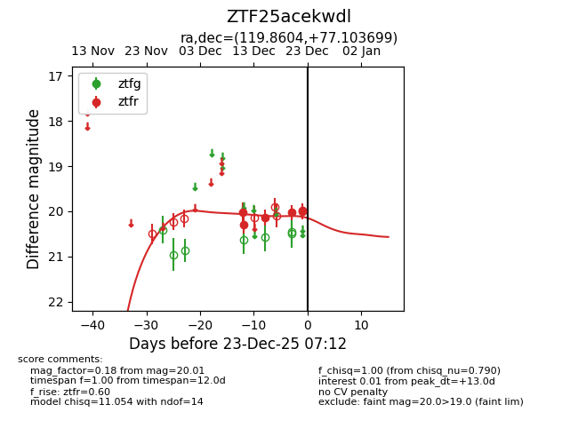
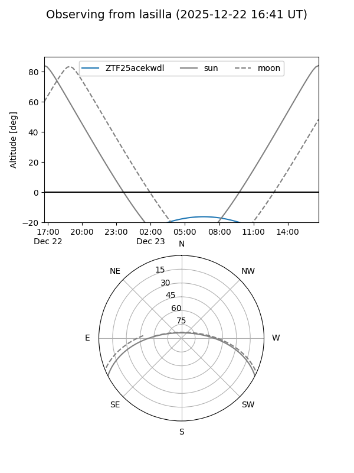
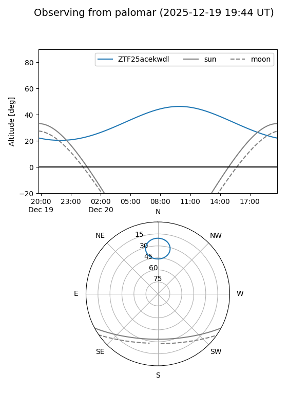
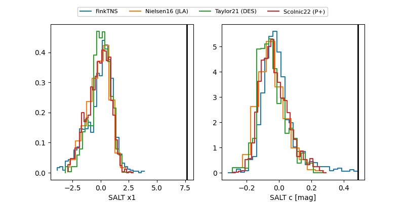

ZTF25acekwdl
Target ZTF25acekwdl at 2025-12-22 18:56
Aliases and brokers:
FINK: fink-portal.org/ZTF25acekwdl
Lasair: lasair-ztf.lsst.ac.uk/objects/ZTF25acekwdl
ALeRCE: alerce.online/object/ZTF25acekwdl
alt names
ZTF25acekwdl (ztf,fink_ztf)
Coordinates:
equatorial (ra, dec) = 119.8604,+77.10370
equatorial (HMS+DMS) = 07:59:26.49,+77:06:13.32
galactic (l, b) = (137.2246,+30.16950)
Flags:
Photometry:
last ztfr=20.01
6 ztfr detections
Lightcurve

Visibility


Additional plots
